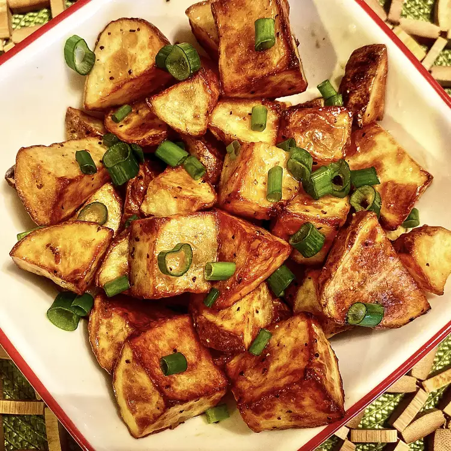

Butter Potatoes

Description
Buttery potatoes cooked in foil over a campfire.
Ingredients
- 1 pound baking potatoes
- 1 cup butter
- salt and pepper to taste
Steps
- Peel and dice potatoes, arrange in a pan or
on a sheet of tin foil. Season with salt and
pepper. Place butter on top.
- Put potatoes on grill or in the oven at 375
degrees F (190 degrees C). Mix around so they
get all buttery and don't burn. Cook until
potatoes are soft.